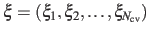
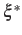
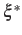
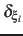
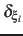
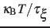
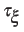
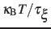
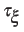

Next: Output files Up: Biasing and analysis methods Previous: Post-processing: reconstructing a multidimensional Contents Index
The metadynamics method uses a history-dependent potential [11] that generalizes to any type of colvars the conformational flooding [12] and local elevation [13] methods, originally formulated to use as colvars the principal components of a covariance matrix or a set of dihedral angles, respectively. The metadynamics potential on the colvars  is defined as:
During the simulation, the system evolves towards the nearest minimum of the ``effective'' potential of mean force
 , which is the sum of the ``real'' underlying potential of mean force
, which is the sum of the ``real'' underlying potential of mean force
 and the the metadynamics potential
and the the metadynamics potential
 .
Therefore, at any given time the probability of observing the configuration
 is proportional to
.
Therefore, at any given time the probability of observing the configuration
 is proportional to
 : this is also the probability that a new Gaussian ``hill'' is added at that configuration.
If the simulation is run for a sufficiently long time, each local minimum is canceled out by the sum of the Gaussian ``hill'' functions.
At that stage the the ``effective'' potential of mean force
: this is also the probability that a new Gaussian ``hill'' is added at that configuration.
If the simulation is run for a sufficiently long time, each local minimum is canceled out by the sum of the Gaussian ``hill'' functions.
At that stage the the ``effective'' potential of mean force
 is constant, and
is constant, and
 is an accurate estimator of the ``real'' potential of mean force
is an accurate estimator of the ``real'' potential of mean force
 , save for an additive constant:
, save for an additive constant:
Assuming that the set of collective variables includes all relevant degrees of freedom, the predicted error of the estimate is a simple function of the correlation times of the colvars
 , and of the user-defined parameters
, and of the user-defined parameters  ,
 and
,
 and  [14].
In typical applications, a good rule of thumb can be to choose the ratio
[14].
In typical applications, a good rule of thumb can be to choose the ratio
 much smaller than
, where
 is the longest among
much smaller than
, where
 is the longest among
 's correlation times:
then dictates the resolution of the calculated PMF.
's correlation times:
then dictates the resolution of the calculated PMF.
To enable a metadynamics calculation, a metadynamics block must be defined in the colvars configuration file. Its only mandatory keyword is the colvars option listing all the variables involved: multidimensional PMFs are obtained by the same metadynamics instance applied to all the colvars.
The parameters  and
and  are specified by the keywords hillWeight and newHillFrequency, respectively.
The values of these options are optimal for colvars with correlation times
in the range of a few thousand simulation steps, typical of many biomolecular simulations:
are specified by the keywords hillWeight and newHillFrequency, respectively.
The values of these options are optimal for colvars with correlation times
in the range of a few thousand simulation steps, typical of many biomolecular simulations:
It is the user's responsibility to either leave hillWeight and newHillFrequency at their default values, or to change them to match the specifics of each system.
The parameter
is instead defined as approximately half the width of the corresponding colvar  (see 3.1).
(see 3.1).